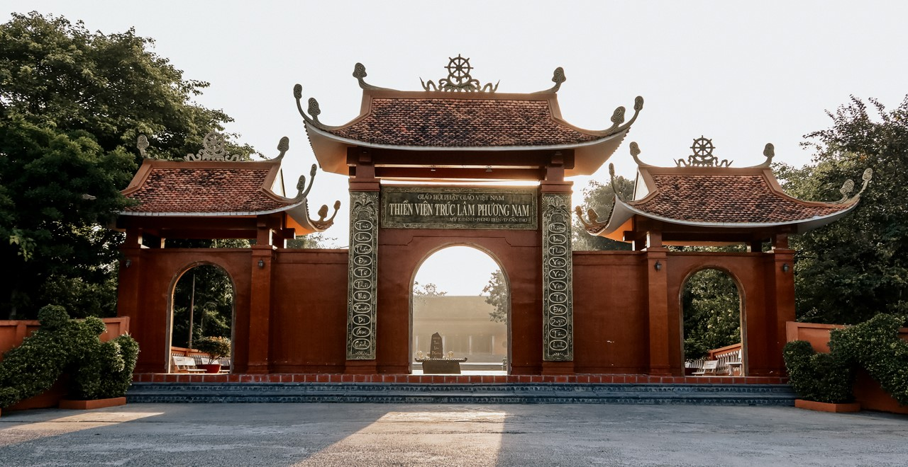

THÀNH PHỐ CẦN THƠ
Tây Đô của miền Tây Nam Bộ - Trung tâm kinh tế, văn hóa và du lịch của Đồng bằng sông Cửu Long.
Lịch sử hình thành Thành phố Cần Thơ
Cần Thơ là vùng đất có lịch sử hình thành từ rất sớm, gắn liền với quá trình khai phá phương Nam của dân tộc Việt Nam. Từ thế kỷ XVII, những lưu dân từ miền Trung và miền Bắc đã đến khai hoang, lập làng trên vùng đất màu mỡ ven sông Hậu. Nhờ điều kiện tự nhiên thuận lợi cùng hệ thống sông ngòi chằng chịt, Cần Thơ nhanh chóng trở thành trung tâm giao thương của khu vực.
Trong thời kỳ Pháp thuộc, Cần Thơ là một trong những đô thị lớn nhất Nam Kỳ. Các tuyến đường thủy quan trọng giúp nơi đây trở thành đầu mối vận chuyển lúa gạo lớn của miền Tây Nam Bộ. Sau năm 1975, thành phố tiếp tục phát triển mạnh về kinh tế, giáo dục và dịch vụ.
Năm 2004, Cần Thơ chính thức trở thành thành phố trực thuộc Trung ương. Hiện nay, thành phố được xem là trung tâm động lực của vùng Đồng bằng sông Cửu Long với hệ thống giao thông, thương mại, giáo dục và y tế phát triển hàng đầu khu vực.

Bến Ninh Kiều
Bến Ninh Kiều là biểu tượng du lịch nổi tiếng nhất của thành phố Cần Thơ. Nằm bên bờ sông Hậu, nơi đây là điểm đến quen thuộc của du khách khi ghé thăm Tây Đô. Công viên Ninh Kiều được xây dựng khang trang, sạch đẹp với quảng trường rộng lớn và tượng Chủ tịch Hồ Chí Minh.
Vào buổi tối, khu vực này trở nên lung linh với hệ thống đèn chiếu sáng, các nhà hàng nổi và các hoạt động văn hóa nghệ thuật. Du khách có thể tham quan cầu đi bộ Ninh Kiều, ngắm cảnh sông Hậu và thưởng thức nhiều món ăn đặc sản miền Tây.
Xem chi tiết
Chợ nổi Cái Răng
Chợ nổi Cái Răng là một trong những chợ nổi lớn nhất khu vực Đồng bằng sông Cửu Long. Chợ họp trên sông từ sáng sớm, nơi hàng trăm ghe thuyền tập trung mua bán trái cây, rau củ và các sản phẩm nông nghiệp đặc trưng miền Tây.
Điểm đặc biệt của chợ nổi là hình thức quảng bá hàng hóa bằng "cây bẹo", treo sản phẩm lên cây sào trên ghe để người mua dễ nhận biết. Đây là nét văn hóa độc đáo thu hút đông đảo du khách trong và ngoài nước.
Xem chi tiết
Thiền viện Trúc Lâm Phương Nam
Thiền viện Trúc Lâm Phương Nam là công trình Phật giáo lớn nhất miền Tây Nam Bộ. Công trình được xây dựng theo kiến trúc thời Lý - Trần với không gian thanh tịnh và trang nghiêm.
Khuôn viên rộng lớn cùng những hàng cây xanh mát tạo nên cảnh quan yên bình. Đây là địa điểm thích hợp cho những du khách muốn tìm hiểu văn hóa Phật giáo và tận hưởng không gian thư giãn.
Xem chi tiết
Nhà cổ Bình Thủy
Nhà cổ Bình Thủy được xây dựng hơn 100 năm trước, là một trong những ngôi nhà cổ đẹp nhất Nam Bộ. Công trình kết hợp hài hòa giữa kiến trúc Pháp và kiến trúc truyền thống Việt Nam.
Ngôi nhà nổi bật với những họa tiết trang trí tinh xảo, nội thất cổ kính và khuôn viên xanh mát. Đây cũng là địa điểm quay nhiều bộ phim nổi tiếng trong và ngoài nước.
Xem chi tiếtẨm thực Cần Thơ
Bên cạnh những danh lam thắng cảnh nổi tiếng, Cần Thơ còn hấp dẫn du khách bởi nền ẩm thực phong phú mang đậm hương vị sông nước.
| Món ăn | Đặc điểm |
|---|---|
| Bánh xèo | Giòn rụm, ăn kèm rau sống và nước mắm chua ngọt. |
| Lẩu mắm | Đặc sản nổi tiếng của miền Tây Nam Bộ. |
| Bánh cống | Món ăn dân dã được nhiều du khách yêu thích. |
| Nem nướng Cái Răng | Đậm đà hương vị truyền thống. |
| Ốc nướng tiêu xanh | Món ăn đặc trưng vùng sông nước. |
Hình ảnh nổi bật của Cần Thơ